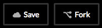
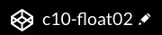

Chemins relatifs et absolus
Les pages HTML ne sont pas toujours situées au même niveau hiérarchique dans l'arborescence des dossiers d'un site web. Le chemin pour atteindre un document HTML, un document CSS ou une image en particulier n'est donc pas toujours le même.
Afin de résoudre ce problème, il faut adapter les chemins relatifs vers les documents en fonction du fichier de départ.
Voyons la différence entre les chemins relatifs et les chemins absolus.
Chemin relatif
page.html- La cible (
page.html) est recherchée par le navigateur au même niveau que le document html où se trouve l'hyperlien. dossier/page.html- La cible (
page.html) est recherchée par le navigateur dans le sous-répertoire dossier, à partir du document html où se trouve l'hyperlien. ../dossier/page.html- Où "
../" signifie que la page est recherchée à partir du répertoire parent (on remonte d'un niveau). ../../dossier/page.html- Où "
../../" signifie que la page est recherchée à partir du répertoire ancêtre (on remonte de deux niveaux). - Il est tout à fait possible de remonter de plus de deux niveaux de répertoires. Pour cela il faudra cumuler les
../comme dans cet exemple où on remonte de trois niveaux :../../../dossier/page.html.
Chemin absolu
https://www.mondomaine.com/dossier/page.html
https://frlacroix1.github.io/images/poster_html5.jpg
Montre le chemin complet d'un document sur le web. Ne fonctionne que lorsque le site est hébergé en ligne, avec un nom de domaine enregistré et actif.
Cette forme est incontournable pour pointer vers une ressource externe, mais elle fonctionne également pour pointer une ressource interne.
Important : les chemins absolus ne fonctionnent que lorsque la page est affichée par l'intermédiaire d'un serveur local (qui simule le dossier racine) ou encore un serveur en ligne.
Codepen, un repère de codeurs et de codeuses
Pour compléter la leçon d'aujourd'hui, vous devez posséder un compte Codepen.

L'application en ligne CodePen est utile pour constituer rapidement une banque d'exemples de code réutilisable.
Elle est aussi un réseau social pour les codeurs et permet à ce titre des échanges illimités.
Créez un compte
Créez un compte et explorez la page des Paramètres (Settings) où vous pouvez notamment choisir :
- l'allure de l'interface de codage (section Syntax Highlightingem>);
- l'autocomplétion du code (Autocomplete, section Editor Options);
- Etc.
Collections
Vous pouvez ajouter des « pens » de votre choix dans vos collections. Il suffit de de cliquer sur l'icone des trois points et de choisir +Add to collection. Vous choisissez ensuite la collection voulue, ou encore, vous en créez une nouvelle.
Fork
Vous pouvez modifier le code de n'importe quel pen. Mais pour sauvegarder vos modifications, voici ce qu'il faut faire:
- Ouvrez le pen de votre choix;
- Appuyez sur le bouton « Fork »: cela crée une copie sur votre « Dashboard »;
- Modifiez et sauvegardez les modifications en cliquant sur « Save »;
 - Vous pouvez également modifier le nom du pen afin de le personnaliser en cliquant sur l'icone en forme de crayon puis en changeant le nom du pen. Il suffit d'enregistrer (Save) pour terminer.

Activités d'évaluation
Exercice 6 - Le Défi Codepen Challenge
Le mot challenge signifie défi
Les CodePen Challenges sont des exercices hebdomadaires proposés par la plateforme CodePen pour stimuler la créativité et la pratique du code front-end autour d’un thème mensuel. Chaque semaine, un nouveau défi invite les participants à créer une petite expérience interactive en HTML, CSS ou JavaScript selon une consigne donnée.
L'exercice 6 a pour objectif de mettre en contexte des situations variées de mise en forme vues depuis le début de la session.
Documents à remettre
La réussite des travaux pratiques sera contrôlée en classe.
Réalisez les 6 pens proposés plus bas à l'aide de directives données en classe.
- Dans votre compte CodePen, créez une collection nommée Défis CodePen;
- Sauvegardez chacun des 6 pens ci-dessous dans votre collection:
- Edit/Fork on CodePen;
- Fork (en bas à droite) pour sauvegarder le pen dans votre compte;
- Add to collection pour l'ajouter à votre collection Défis CodePen.
- Réalisez les 6 défis ci-dessous en classe.
- Transmettez le lien de votre collection (exemple de lien ) à votre enseignant avant la fin du cours par l'intermédiaire de Teams (dans une discussion privée).
DÉFI 1 / Navigation principale fluide + premier lien à largeur fixe
See the Pen c09-defi1_fixe-fluide by Frédéric Lacroix (@frlacroix) on CodePen.
À partir du pen ci-dessus:
- À l'aide de la requête média, faites en sorte que la largeur du lien Un beau nom de site soit fixe à 300px sur écran large (point de rupture >500px).
- Les quatre autres liens doivent se retrouver sur la même ligne que le premier lien et conserver une largeur fluide (%).
DÉFI 2 / Image flottante
See the Pen Défi 2 - Image flottante by Frédéric Lacroix (@frlacroix) on CodePen.
À partir du pen ci-dessus:
- Effectuez la mise en forme de la légende en la liant graphiquement à l'image (voir exemple en classe).
- Donnez une couleur d'arrière-plan au contenu principal et une autre au pied de page.
- Le contenu principal et le contenu du pied de page doivent avoir une largeur maximale de 700px, tout en faisant en sorte que les couleurs d'arrière-plan demeurent pleine largeur.
- Sur mobile: l'image doit prendre toute la largeur de la fenêtre du navigateur, tout en conservant un peu d'espace de chaque côté.
- Sur écran large (point de rupture >500px): l'image doit flotter dans le texte, en alternant à gauche et à droite, et prendre la moitié de la largeur de la section.

DÉFI 3 / Images réactives avec cadrages différents
See the Pen Défi 3 - Images réactives avec cadrages différents by Frédéric Lacroix (@frlacroix) on CodePen.
À partir du pen ci-dessus:
- Assurez-vous que l'image est fluide et prenne toute la largeur de la fenêtre du navigateur, mais sans déborder.
- Rendez l'image réactive en modifiant le balisage HTML: ajoutez une deuxième source d'image et rendez l'affichage des deux sources conditionnelle à la largeur de la fenêtre du navigateur.
- Utilisez le seuil de 400px comme point de bascule entre les deux images.
DÉFI 4 / Sous-menu superposé et centré avec flexbox
See the Pen c09-menu-superposé-centré-départ by Frédéric Lacroix (@frlacroix) on CodePen.
À partir du pen ci-dessus:
- Insérez le code de l'élément picture du pen précédent (Challenge 3) avec l'image réactive complétée.
- Positionnez le titre principal devant la bannière et centrez-le à la verticale et à l'horizontale.
- Ajustez la couleur et la taille du titre principal (avec l'unité vw). Ajoutez-lui une ombre projetée.
- Faites la mise en forme du sous-menu de quatre liens qui se trouve dans le HTML du pen: la mise en forme générale et les effets au survol doivent s'inspirer du modèle présenté en classe.
- Positionnez le sous-menu devant la bannière, centrez-le à l'horizontal, et placez-le sous le titre principal.
DÉFI 5 / Tableau avec mise en forme alternée et effet au survol
See the Pen Défi 5 - Tableau avec mise en forme alternée et effet au survol by Frédéric Lacroix (@frlacroix) on CodePen.
À partir du pen ci-dessus:
- Effectuez la mise en forme du tableau de manière à reproduire le modèle présenté en classe : caption intégré, mise en forme alternée des lignes, espacement autour du contenu des cellules, alignement des prix à droite.
- Créez un effet au survol du curseur : modification de la couleur d'arrière-plan d'une ligne de tableau.
DÉFI 6 / Utiliser un sprite css pour augmenter l'efficacité de chargement d'une page web
Faites en sorte que les images du menu de réseaux sociaux correspondent aux quatre réseaux différents, à la fois au repos et au survol.
See the Pen Défi 6 - Utiliser un sprite css pour augmenter l'efficacité de chargement d'une page web by Frédéric Lacroix (@frlacroix) on CodePen.
Échéancier
Le travail doit être terminé avant la fin du cours.
Transmettez le lien de votre collection (exemple de lien ) à votre enseignant avant la fin du cours par l'intermédiaire de Teams (dans une discussion privée).